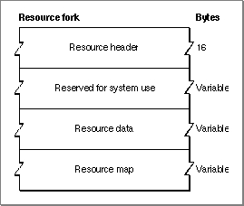
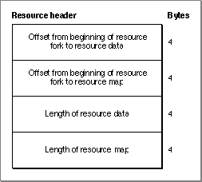
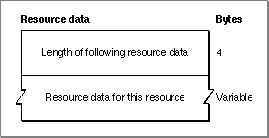
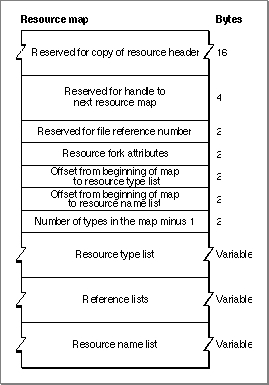
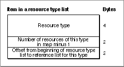
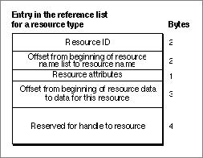
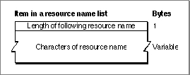
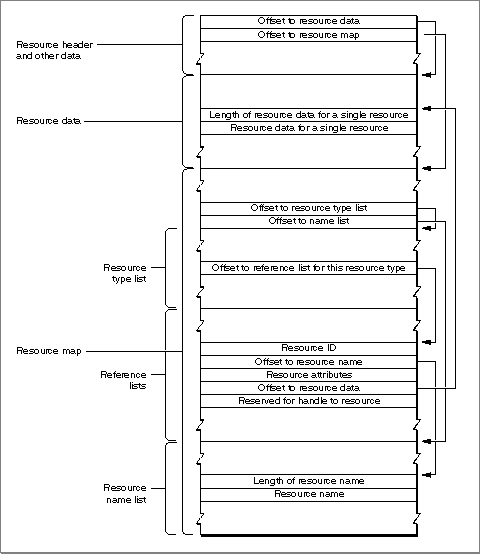

Legacy Document
Important: The information in this document is obsolete and should not be used for new development.
Important: The information in this document is obsolete and should not be used for new development.


Resource File Format
You need to know the exact format of a resource fork, which is described in this section, only if you're writing an application that creates or modifies a resource fork directly, without using Resource Manager routines.Figure 1-11 shows the format of a compiled resource fork.
Figure 1-11 Format of a resource fork
 As Figure 1-11 shows, every resource fork begins with a resource header. Because the resource header contains an offset to the resource map, the resource map does not necessarily have to be located at the end of the resource fork.
Figure 1-12 shows the format of a resource header.
Figure 1-12 Format of a resource header in a resource fork
 The resource data in a resource fork consists of the data in its individual resources. Figure 1-13 shows the format of resource data for a single resource.
Figure 1-13 Format of resource data for a single resource
 For detailed descriptions of the resource data for various standard resource types, see the appropriate books in the Inside Macintosh series.
The resource data in a resource fork is followed by the resource map. Figure 1-14 shows the format of a resource map.
Figure 1-14 Format of the resource map in a resource fork
 After reading the resource map into memory, the Resource Manager stores the indicated information in the reserved areas at the beginning of the map.
Each item in a resource type list specifies one resource type used in the resource fork, the number of resources of that type, and the location of the reference list for that type. Figure 1-15 shows the format of an item in a resource type list.
Figure 1-15 Format of an item in a resource type list
 The resource type list is followed by the reference lists for each type of resource. Each resource type has a corresponding reference list that contains entries for each resource of that type. The reference lists are contiguous and in the same order as the types in the resource type list.
Figure 1-16 shows the format of an entry in a reference list.
Figure 1-16 Format of an entry in the reference list for a resource type
 If a resource does not have a name, the offset to the resource name in the resource's entry in the reference list is -1. If a resource does have a name, the offset identifies the location of the name's entry in the resource name list. Figure 1-17 shows the format of an item in the resource name list.
Figure 1-17 Format of an item in a resource name list
 Figure 1-18 illustrates the use of various offsets in the resource header and resource map, including the offsets for an entry in a reference list for an individual resource. Although the figure shows the resource map after the resource data, the resource map can be located almost anywhere in the resource fork as long as the offset to the map in the resource header points to the right location.
Figure 1-18 Offsets in a resource fork and an entry for a single resource in a reference list
